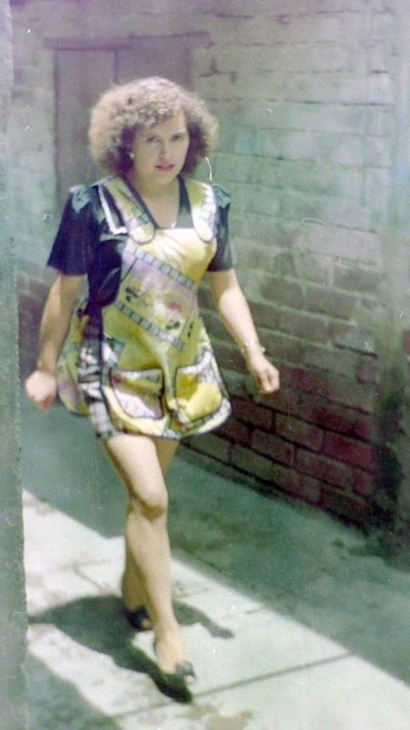

Otra de las cosas que recuerdo es cuando me ayudaba a estudiar para los exámenes.
No importaba lo que ella estuviera haciendo, siempre dedicaba tiempo a ayudarnos
con las tareas, los trabajos escolares o a estudiar para los exámenes. La recuerdo
cocinando mientras me preguntaba las capitales de todos los países del continente americano,
o las lunas de todos los planetas del sistema solar. Me acuerdo como me preguntaba
fechas y nombres de la historia de México mientras ella andaba apurada matando moscas
en la cocina. Siempre con su delantal y siempre de buen humor, haciendo bromas sobre
las materias que repasábamos.
Era muy estricta para muchas cosas, pero sobre todo en el tema de los estudios.
Hubo una vez, cuando yo iba a la primaria Federico Froebel, en que ingenuamente
escribí en el cuaderno de tareas: "Mañana no hay clases" porque no quería ir a la escuela
al día siguiente. Y aunque a Mamita se le hizo raro cuando lo leyó, no me dijo nada, y fue
hasta esa noche como a las 10:00 pm cuando comprobó (no sé cómo) que eso de que no había clases
no era cierto, obviamente lo supo desde un principio, pero esperó hasta estar segura para
darme una lección, así que me puso en ese mismo momento a hacer la tarea. Ahí estaba yo
a la media noche chillando porque me faltaba mucho por hacer. Hasta recuerdo que Pá le decía:
"Ya déjalo que se duerma", y Mamita le contestaba: "No, todavía le falta mucho". Pero lo
que se me quedó mas marcado, fue cuando ella estaba revisando mis libros, esa misma noche, mientras yo chillaba haciendo la
tarea, y encontró en uno los libros, la instrucción, escrita con lápiz: "resolver de la
página 'tal' a 'tal'", entonces levantó el libro, lo giró hacia mi para que viera lo que estaba escrito,
y me dijo: "¬°Mira chiquitito!", en ese tono de "ya valiste gorro" ü§£.
La verdad no recuerdo hasta que hora me dormí esa noche, pero es un recuerdo que hasta la fecha tengo muy marcado.
Hoy en día me da risa, pero en ese momento se me vino el mundo encima. Esa fue la primera
y última vez que intenté engañarla de que al día siguiente no habría clases.

← Volver a Historias